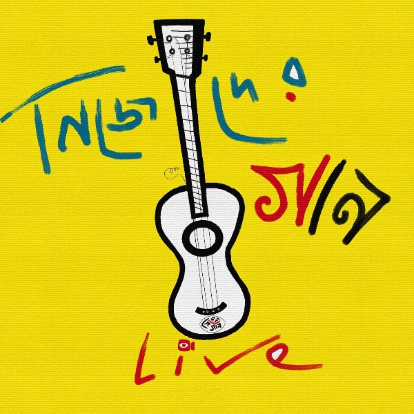

পাথরের মূর্তিতে মানুষ কিলো কিলো দুধ নষ্ট করতে পারে কিন্তু ক্ষুধার্ত মানুষকে খাওয়ানোর জন্য তাদের তেমন আগ্রহ দেখা যায় না। বিশাল বিশাল মন্দির,মসজিদ,গির্জার আর্কিটেকচার তৈরি করে মানুষ, আর সেই মানুষই ধর্ম-জাতপাত ও বিভিন্ন কারণে গুরুত্ব পায়না বরং লাঞ্ছিত হয়। এমনটাই হয়ে আসছে যুগের পর যুগ, মানুষ কল্পনার চরিত্রকে ভগবান মনে করে, আবেগে ভাসে আর জ্যান্ত মানুষকে এড়িয়ে চলে অযুহাতে। তাই আমাদের মতে শ্রমিক অর্থাৎ যে তার শ্রমের বিনিময়ে বেঁচে থাকে ও মানুষকে বাঁচিয়ে রাখে দৈনন্দিন যাবতীয় প্রেক্ষাপটে অর্থাৎ জলজ্যান্ত রক্তমাংসে গড়া মানুষই আমাদের ভগবান।
Song credits :
Lyrics & Tune - Rajib Dutta
Music Arrengement - Indrajit Bala
Vocals - Arghyadeep Chowdhury,Jayanta Pathak,Rajib Dutta, Indrajit Bala
Shaker - Shibam Das
Guitar - Arpan Rakshit
Ukulele-Indrajit Bala
Animation -Rajib Dutta
Background Wall Painting-Rajib Dutta
Recorded & Edited by - Jayanta Pathak
Special Thanks : Animesh Roy & Team Nijeder Gaan
Check it out Our Facebook Page 👇

Lyrics :
শ্রমিক'ই ভগবান :
আমাদের গানে কারা সারা দিয়ে যায়
কাক পক্ষী শকুনি না চিল
কানাঘুষো শোনা যায়
ওরা ছোঁড়ে ঢিল
কাশ্মীরে ওড়ে না আর
সাদা বক চিল (2x)
নাকে আসে বারুদের গন্ধ
দ্যাখো কারো নিঃশ্বাস হয় বন্ধ
কত মা কাঁদে আর শাসকেরা হাসে/আসে
(বছরের পর বছর শাসক বদলায়, মানুষ একই থেকে যায়)
লাশের গায়েতে রাজনীতি দানা বাঁধে (2x)
মরা হাতির লাখ টাকা দাম
আর জ্যান্ত মানুষ ঝরায় কতো ঘাম
ট্রামে বাসে জঙ্গলে/মেট্রোতে আপিসে বাজারে
হাজারে হাজারে ওরা খেঁটে খুঁটে মরে
সেতো শ্রমিক
তুমি শ্রমিক
আমি শ্রমিক
এও শ্রমিক(সামনে অথবা পাশে থাকা মানুষটি)
রেশনের কোটাতে যদি বি.পি.এল হও
চাল পাবে ডাল পাবে চিনিও তো পাও
সুগারেতে ভয় নেই
চিনিতে ভেজাল নেই
মানুষে কেচাল নেই
রেখেছো তো ভালো
সেতো ভগবান
তুমি ভগবান
আমি ভগবান
এও ভগবান(সামনে অথবা পাশে থাকা মানুষটি)
ভৌ ভৌ ভৌ
শব্দ করে
কান তালা
কারা ওরা
জব্দ করে
শব্দ করে
আহা শব্দ করে
তালা ভেঙে
মোদের ওরা
জব্দ করে
সেতো শ্রমিক
তুমি শ্রমিক
আমি শ্রমিক
এও শ্রমিক
কল্পনায় বহিতেছে যে ভগবান,সে নয় সে নয় আমার ভগবান।